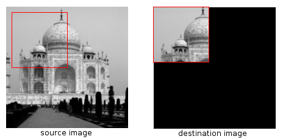
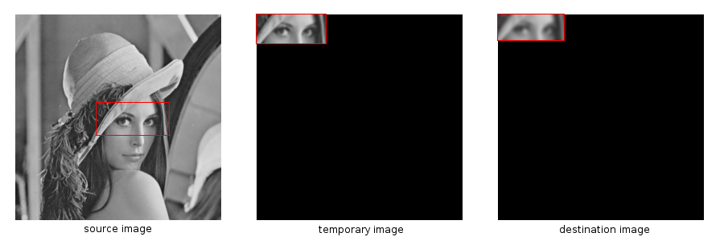
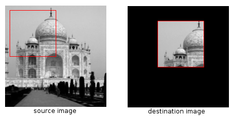

PARP Research Group
PARP Research Group
| PARP Research Group |
Universidad de Murcia |
Interoperability with the IPP libraryTo enable the QVision to interoperate with the IPP, the following line must be present (and un-commented) in the config.pri file, prior to compilation and installation of the QVision library: CONFIG += qvipp Any program using the QVision framework IPP wrapper must include the following heade in its source code: #include <qvipp.h>
From then on, both the QVision library and the developed applications will automatically include and link the adequate files from the IPP library. Directly using QVision image objects with native IPP functionsThe simplest way of using a QVision image on a IPP function, is by using the QVImage::operator() operator, and the QVImage::getStep(), QVImage::getRows() and QVImage::getCols() methods from the class QVImage. For example, the IPP function Set has the following header signature: IppStatus ippiSet_8u_C1R(Ipp8u value, Ipp8u* pDst, int dstStep, IppiSize roiSize); The following code will apply that function to a single channel, gray-scale image: #include <qvip.h> // [...] QVImage<> image; ippiSet_8u_C1R( 128, // Value to set image pixels. &image(0,0), // Pointer to the pixel (0,0). image.getStep(), // Step of the image. (IppiSize){ image.getCols(), image.getRows() } // Size of the image to be processed // by the IPP function. ); But the former method is perhaps too low-level to work with under the QVision framework. The following section exposes a more adequate method for using QVision images with IPP functions. The IPP wrapper functionsThe QVision offers a set of wrapper functions to use the Intel's Performance Primitives library in an object oriented fashion. For each one of the most commonly used functions in the IPP library, the QVision provides an homonimous wrapper function that takes the same input images and data, and calls the original IPP function to process them. The difference between the original IPP function and the wrapper function, is that the latter takes QVImage and/or QVMatrix objects, instead of a pointer to the image or matrix content, and the image step, whenever an image is required as input parameter. You can see the full list and documentation of the IPP wrapper functions in the group IPP wrapper functions. The following subsections detail their usage. IPP wrapper function naming conventionsWe take for instance the functions used to add two image in the IPP library. There is a whole family of them, named with the prefix ippiAdd_, followed by a suffix indicating relevant information about the storage type of the pixels contained the image, the image number of channels, and so on. For example, the function ippiAdd_8u_C1RSfs is used to add two 8-bit unsigned data type images, composed by one single channel, storing the result in a destination image of the same type. That function has the following header: IppStatus ippiAdd_8u_C1RSfs(
const Ipp<Ipp8u>* pSrc1, int src1Step,
const Ipp<Ipp8u>* pSrc2, int src2Step,
Ipp<Ipp8u>* pDst, int dstStep,
IppiSize roiSize,
int scaleFactor);
The QVision offers a wrapper function named Add, which uses the following header: void Add( const QVImage<uChar, 1> & qvimage_pSrc1, const QVImage<uChar, 1> & qvimage_pSrc2, QVImage<uChar, 1> & qvimage_pDst, const int scaleFactor = 1, const QPoint &destROIOffset = QPoint(0,0)); The input image object type parameter qvimage_pSrc1 in the Add function substitutes the input parameters pSrc1 and src1Step from the IPP function ippiAdd_8u_C1RSfs (corresponding to the image data pointer and image step). The body of the Add function calls the IPP function, mapping the pointer to the data buffer of the image qvimage_pSrc1 and its step value respectively to the input parameters pSrc1 and src1Step of the IPP function. The gain with this approach is double. First, the interface of the Add function is clearer than the header of its IPP counterpart. The simpler name of the former (which omits the pixel depth and channel number suffix) grants an easier and more robust object-oriented usage. By overloading that name, we can select which of the Add functions should be called, depending on the type of the input images. Second, images require only one input parameter in the wrapper function, instead of the two required in the original IPP function. A typical call to the IPP original function may look like this: IppiSize size = { cols, rows };
IppStatus status = ippiAdd_8u_C1RSfs(img1Ptr, img1Step, img2Ptr, img2Step, imgDestPtr, imgDestStep, size, 1);
Calls to the Add function can be like this: Add(img1, img2, imgDest); // No roiSize required. Add(img1, img2, imgDest, 2); // Factor different than 1. Add(img1, img2, imgDest, 1, QPoint(10,10) ); // Destination ROI offset different than the default. // (its meaning and usage is discussed below). QVision naming for IPP pixel depth notationThe QVision offers an alternative notation for bit-depth types, to make them more human-readable. The following table illustrates the type equivalence between IPP image and QVImage depth types:
Both naming conventions are interchangeable, but in the source code of the toolkit we preferred the first one. Regions of Interest (ROI)Most of the IPP functions can restrict their operations to a small area of the input images. Aritmetical operators, filtering functions, color conversion functions, etc... can be applied only to a rectangular area inside the input image, which can include the whole image if neccesary. QVImage objects have a property named ROI which contains a QRect object modeling the rectangular area inside the image, which is used as the Region of Interest by the IPP functions that operate with it. This rectangle can be read and modified with several methods from the QVGenericImage class: QVGenericImage::getROI, QVGenericImage::setROI, QVGenericImage::erodeROI, QVGenericImage::dilateROI, QVGenericImage::resetROI and so on. Usage of the ROI in image processingThis is a ROI usage example code: The following code illustrates the usage of the ROI with the Copy function: #include <qvipp.h> // QVIPP functions are included in this header file. [...] QVImage<uChar> sourceImage("tajMahal.png"); sourceImage.setROI(10,10,90,90); // This sets the ROI of the input image. QVImage<uChar> destinationImage(200, 200); Copy(sourceImage, destinationImage); [...] The figure below shows the result of that code on an input image. The left image is the source image, containing the tajMahal image. The right image shows the result of the Copy operation. The black area can contain unspecified content, not necessarily black, if it was not previously initialized so.

The ROI is commonly used to specify the portion of the image which contains valid information. Thus, after the copy operation of the previous example, the ROI of the destinationImage will be set to contain only the part of the image which really shows a part of the Taj Mahal -that is, that contains "valid" data-.
Each image processing function should update the ROI of the output image or images, so that they contain the correct area computed by the operations, and which can be used in posterior processing. The following code is useful to illustrate this: [...] QVImage<uChar> sourceImage("lena.png"); sourceImage.setROI(100, 110, 90, 40); // This sets the ROI of the input image. QVImage<uChar> temporaryImage(256, 256); FilterGauss(sourceImage, temporaryImage, 5); QVImage<uChar> destinationImage(256, 256); FilterGauss(temporaryImage, destinationImage, 5); [...] It applies two Gaussian filter on the lena image. The first call to FilterGauss will store in the ROI of the temporaryImage the area of the image which contains valid data from its operations, so the next call to FilterGauss will only work with that part of the image -the one that now is supposed to be valid-.

Of course, and if needed, the programmer can anyway set another ROI at any time by explicitly calling the method QVImage::setROI(). Destination ROI pointerIn some cases the developer may want to indicate a location for the ROI in the destination image. The user can indicate in the parameter destROIOffset (present in most of the IPP wrapper functions) the point in the destination image where the function must locate the top left corner of the ROI. This parameter is included in the header of several functions from the package IPP wrapper functions, the Copy function amongst them. The following code illustrates the usage of the destROIOffset parameter: [...] QVImage<uChar> sourceImage("tajMahal.png"); sourceimage.setROI(10,10,90,90); // This sets the ROI of the input image. QVImage<uChar> destinationImage(200, 200); Copy(sourceimage, destinationImage, QPoint(60,30)); [...] The QPoint(60,30) parameter in the call to the Copy function indicates that it should copy the content of the ROI in the source image to the destination location, starting at the point (60,30):

|